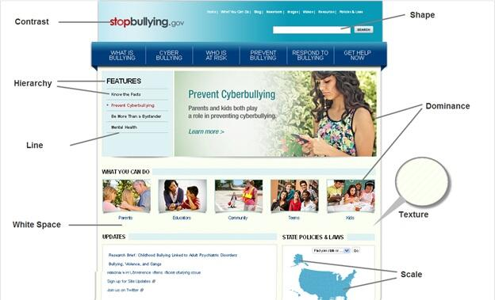

Visual Design Basics
Visual design focuses on the aesthetics of a site and its related materials by strategically implementing images, colors, fonts, and other elements. A successful visual design does not take away from the content on the page or function. Instead, it enhances it by engaging users and helping to build trust and interest in the brand.
Basic Elements of Visual Design
The basic elements that combine to create visual designs include the following:
-
Lines connect two points and can be used to help define shapes, make divisions, and create textures. All lines, if they’re straight, have a length, width, and direction.
-
Shapes are self-contained areas. To define the area, the graphic artist uses lines, differences in value, color, and/or texture. Every object is composed of shapes.
-
Color palette choices and combinations are used to differentiate items, create depth, add emphasis, and/or help organize information. Color theory examines how various choices psychologically impact users.
-
Texture refers to how a surface feels or is perceived to feel. By repeating an element, a texture will be created and a pattern formed. Depending on how a texture is applied, it may be used strategically to attract or deter attention.
-
Typography refers to which fonts are chosen, their size, alignment, color, and spacing.
-
Form applies to three-dimensional objects and describes their volume and mass. Form may be created by combining two or more shapes and can be further enhanced by different tones, textures, and colors.
Principles for Creating a Visual Design
A successful visual design applies the following principles to elements noted above and effectively brings them together in a way that makes sense. When trying to figure out how to use the basic elements consider:
-
Unity has to do with all elements on a page visually or conceptually appearing to belong together. Visual design must strike a balance between unity and variety to avoid a dull or overwhelming design.
-
Gestalt, in visual design, helps users perceive the overall design as opposed to individual elements. If the design elements are arranged properly, the Gestalt of the overall design will be very clear.
-
Space is “defined when something is placed in it”, according to Alex White in his book, The Elements of Graphic Design. Incorporating space into a design helps reduce noise, increase readability, and/or create illusion. White space is an important part of your layout strategy.
-
Hierarchy shows the difference in significance between items. Designers often create hierarchies through different font sizes, colors, and placement on the page. Usually, items at the top are perceived as most important.
-
Balance creates the perception that there is equal distribution. This does not always imply that there is symmetry.
-
Contrast focuses on making items stand out by emphasizing differences in size, color, direction, and other characteristics.
-
Scale identifies a range of sizes; it creates interest and depth by demonstrating how each item relates to each other based on size.
-
Dominance focuses on having one element as the focal point and others being subordinate. This is often done through scaling and contrasting based on size, color, position, shape, etc.
-
Similarity refers to creating continuity throughout a design without direct duplication. Similarity is used to make pieces work together over an interface and help users learn the interface quicker.
Example of Pulling it all together
Applying design principles to the basic elements can seem overwhelming at first but once you start pulling a page or concept together, it becomes easier. Below is an example homepage that features some of the principles in action:

-
Color contrast was applied to the logo making the word “stop” stand out
-
Text spacing and size creates a visual hierarchy
-
Featured image in the carousel dominates over the smaller images below it to create a focal point
-
White space is used around text and between sections to allow the page to breath
-
Textured background to helps the elements on the page stand out on top of it
-
Map showing scale
-
Lines to divide sections
-
Shapes to create buttons
Additional Information